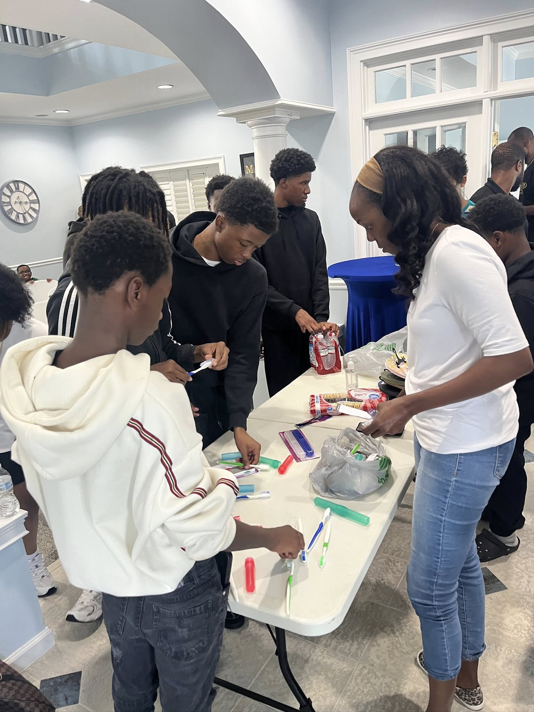

About the organization
Lutheran Confessional Church Pakistan Incorporated exists to serve the public through charitable, educational and community-focused work in Georgia.
Lutheran Confessional Church Pakistan Incorporated is a nonprofit corporation organized in the State of Georgia. The organization is operated for public benefit purposes and supports community needs through outreach, education, volunteer engagement and practical assistance.
Our approach is simple: listen to community needs, plan responsible activities, keep clear records and communicate openly with the people we serve. The organization uses its published contact channels for program questions, partnership requests and verification.
Information shown on this website, including EIN 21304918, address 1171 Atlanta Highway, Cumming, GA, 30040, email and telephone, is provided so that community members and partners can identify and contact the organization easily.
Mission in practice
A stronger layout for mobile and desktop visitors, built around real nonprofit language.
